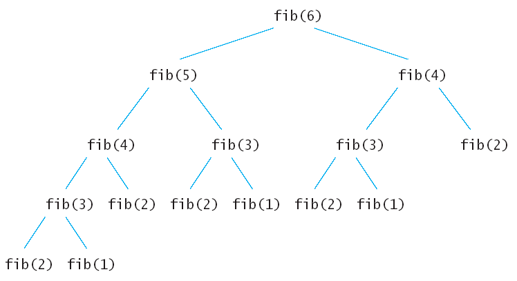

最近看了一些动态规划方面的东西，在此作一些笔记。
引例
【例1】动态规划算法的核心是记住已经求过的解，记住这些解的方式有两种：自顶向下的备忘录法和自底向上。
为了说明动态规划的这两种方法，先举一个最简单的例子：求斐波拉契数列Fibonacci 。
$$
Fibonacci(n) =
\left \{
\begin {align}
& 1, n=0 \\
& 1, n=1 \\
& Fibonacci(n-1) + Fibonacci(n-2)
\end {align}
\right.
$$
通过递归方法很容易实现，代码如下：
1 |
|
用下图表示上面的递归计算，每个节点代表依次计算。

可以发现 fib(3) 和fib(4) 被分别重复计算了 3 次和 2次。也就是说有很多子节点被重复执行了，存在多余的计算。所以说这个问题还能有更优的求解方法。动态规划就是其优化方法，线面分别使用自顶向下的备忘录法和自底向上的两个方法求解。
备忘录法：
1 |
|
备忘录法也是比较好理解的，创建了一个n+1大小的数组来保存求出的斐波拉契数列中的每一个值，在递归的时候如果发现前面fib(n)的值计算出来了就不再计算，如果未计算出来，则计算出来后保存在Memo数组中，下次在调用fib(n)的时候就不会重新递归了。比如上面的递归树中在计算fib(6)的时候先计算fib(5)，调用fib(5)算出了fib(4)后，fib(6)再调用fib(4)就不会在递归fib(4)的子树了，因为fib(4)的值已经保存在Memo[4]中。
自底向上：
备忘录法还是利用了递归，上面算法不管怎样，计算fib(6)的时候最后还是要计算出fib(1)，fib(2)，fib(3)……,那么何不先计算出fib(1)，fib(2)，fib(3)……,呢？这也就是动态规划的核心，先计算子问题，再由子问题计算父问题。
1 | # 方法 1 |
自底向上方法也是利用数组保存了先计算的值，为后面的调用服务。观察参与循环的只有 i, i-1, i-2三项，因此该方法的空间可以进一步的压缩如下。
1 | # 方法 2 |
一般来说由于备忘录方式的动态规划方法使用了递归，递归的时候会产生额外的开销，使用自底向上的动态规划方法要比备忘录方法好。
适用的情况
能采用动态规划求解的问题的一般要具有2个性质：
最优子结构：如果问题的最优解所包含的子问题的解也是最优的，就称该问题具有最优子结构，即满足最优化原理。因此，某个问题是否适合应用动态规划算法，它是否具有最优子结构性质是一个很好的线索。使用动态规划算法时，用子问题的最优解来构造原问题的最优解。
具有重叠子问题：即子问题之间是不独立的，一个子问题在下一阶段决策中可能被多次使用到。（该性质并不是动态规划适用的必要条件，但是如果没有这条性质，动态规划算法同其他算法相比就不具备优势）。在斐波拉契数列中，可以看到大量的重叠子问题，比如说在求fib(6)的时候，fib(2)被调用了5次。如果递归算法反复求解相同的子问题，就称为具有重叠子问题（overlapping subproblems）性质。在动态规划算法中使用数组来保存子问题的解，这样子问题多次求解的时候可以直接查表不用调用函数递归。
无后效性：如果给定某一阶段的状态，则在这一阶段以后过程的发展不受这阶段以前各段状态的影响。要求出fib(6)，只需要知道fib(5),fib(4)的值，而fib(5),fib(4)是如何算出来的，对fib(6)的求解释没有影响的。“未来与过去无关”，这就是无后效性。
核心思想
钞票问题
【例2】先来看看生活中经常遇到的事。假设您是个土豪，身上带了足够的1、5、10、20、50、100元面值的钞票。现在您的目标是凑出某个金额w，需要用到尽量少的钞票。
依据生活经验，我们显然可以采取这样的策略：能用100的就尽量用100的，否则尽量用50的……依次类推。在这种策略下，666=6×100+1×50+1×10+1×5+1×1，共使用了10张钞票。
这种策略称为“贪心”：假设我们面对的局面是“需要凑出w”，贪心策略会尽快让w变得更小。能让w少100就尽量让它少100，这样我们接下来面对的局面就是凑出w-100。长期的生活经验表明，贪心策略是正确的。
但是，如果我们换一组钞票的面值，贪心策略就也许不成立了。如果一个奇葩国家的钞票面额分别是1、5、11，那么我们在凑出15的时候，贪心策略会出错：
- 15=1×11+4×1 （贪心策略使用了5张钞票）
- 15=3×5 （正确的策略，只用3张钞票）
我们用f(n)来表示“凑出n所需的最少钞票数量”
$f(n)$ 只与 $f(n-1),f(n-5),f(n-11)$相关；更确切地说：
$$
f(n)=\min\{f(n-1),f(n-5),f(n-11)\}+1
$$
我们要求出f(n)，只需要求出几个更小的f值。利用自底向上的动态规划方法其代码如下：
1 |
|
结合上例我们讨论 动态规划算法的核心思想。动态规划为什么会快？
无论是动态规划还是暴力求解，都是在可能解空间内，寻找最优解。
钞票问题中，暴力求解是枚举所有的可能解，这是遍历了可能解空间。动态规划是枚举有希望成为答案的解。这个空间比暴力的小得多。也就是说：动态规划自带剪枝。
动态规划舍弃了一大堆不可能成为最优解的答案。譬如：
15 = 5+5+5 被考虑了。
15 = 5+5+1+1+1+1+1 从来没有考虑过，因为这不可能成为最优解。
从而我们可以得到动态规划的核心思想：尽量缩小可能解空间。
在暴力算法中，可能解空间往往是指数级的大小；如果我们采用动态规划，那么有可能把解空间的大小降到多项式级。一般来说，解空间越小，寻找解就越快。这样就完成了优化。
问题求解步骤
解决动态规划类问题，分为两步：
1.确定状态，
2.根据状态确定状态转移方程
确定状态上可以执行的操作，然后是当前状态和前一个状态或者前多个状态有什么关联，通常当前状态下可执行的操作必定是关联到我们之前的几个状态。
动态规划的经典模型及其举例
线性模型: 线性指的是状态的排布是呈线性的。举例：Fibonacci问题； 最长上升子序列(LIS-LCS)。
区间模型:
背包模型: 背包问题。
参考资料
知乎讨论：什么是动态规划（Dynamic Programming）？动态规划的意义是什么？